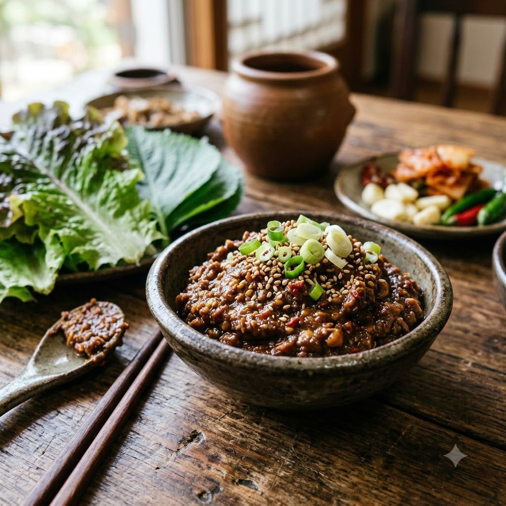

Ssamjang

Ssamjang
No-Cook – Mix 5 min — Makes ~1/2 cup
Vegetarian • Korean • No-Cook Finish • Homemade
Ingredients
- 3 tbsp doenjang (Korean fermented soybean paste, or substitute white miso)
- 1 tbsp gochujang
- 1 tbsp sesame oil
- 1 tsp sugar
- 2 cloves garlic, minced
- 1 spring onion, finely chopped
- 1 tsp toasted sesame seeds
Method
1In a bowl, combine the doenjang, gochujang, sesame oil and sugar, mixing until smooth.
2Stir in the garlic, spring onion and sesame seeds.
3Transfer to a small serving bowl. Refrigerate any leftovers for up to 2 weeks.
Tip: Ssamjang is traditionally served alongside grilled meats and lettuce wraps — a small dollop on each wrap adds a salty, savoury kick.